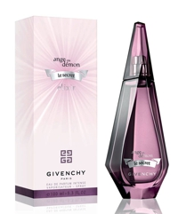

Описание товара
Парфюмерная вода Givenchy Ange Ou Demon Le Secret Elixir обладает магнетической силой, символизирующей
границу
света
и тьмы, добра и зла. Подобно приворотному зелью, аромат магическим образом действует на мужчин, заставляя их
преклоняться и желать, терять голову и совершать безумные поступки. Обладательница данного парфюма знает
себе
цену и
не боится своей красоты и очарования, умело используя их в своих интересах. Невероятная композиция начинает
свое
таинственное звучание нотами нероли и чая на фоне кисловатых лимонных аккордов. Сексуальное «сердце»
благоухает
белоснежным жасмином, цветами апельсина и франжипани, а чувственный шлейф аромата окутывает воздушным
облаком
мускуса, пачули, кедра и ванили.